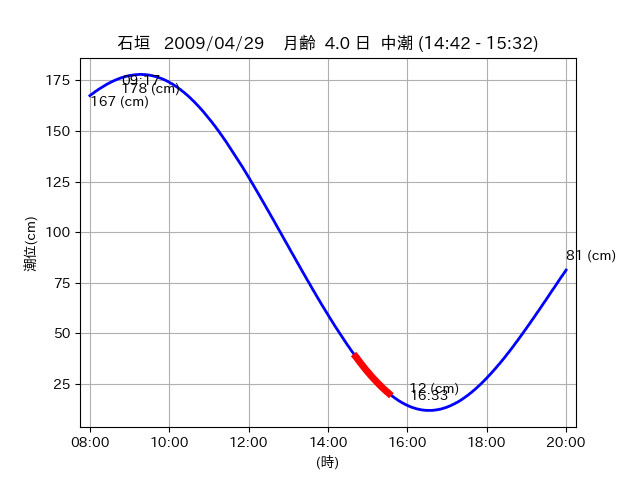

<!DOCTYPE html>
<html>
<head>
    
    <meta http-equiv="content-type" content="text/html; charset=UTF-8" />
    
        <script>
            L_NO_TOUCH = false;
            L_DISABLE_3D = false;
        </script>
    
    <style>html, body {width: 100%;height: 100%;margin: 0;padding: 0;}</style>
    <style>#map {position:absolute;top:0;bottom:0;right:0;left:0;}</style>
    <script src="https://cdn.jsdelivr.net/npm/leaflet@1.9.3/dist/leaflet.js"></script>
    <script src="https://code.jquery.com/jquery-3.7.1.min.js"></script>
    <script src="https://cdn.jsdelivr.net/npm/bootstrap@5.2.2/dist/js/bootstrap.bundle.min.js"></script>
    <script src="https://cdnjs.cloudflare.com/ajax/libs/Leaflet.awesome-markers/2.0.2/leaflet.awesome-markers.js"></script>
    <link rel="stylesheet" href="https://cdn.jsdelivr.net/npm/leaflet@1.9.3/dist/leaflet.css"/>
    <link rel="stylesheet" href="https://cdn.jsdelivr.net/npm/bootstrap@5.2.2/dist/css/bootstrap.min.css"/>
    <link rel="stylesheet" href="https://netdna.bootstrapcdn.com/bootstrap/3.0.0/css/bootstrap-glyphicons.css"/>
    <link rel="stylesheet" href="https://cdn.jsdelivr.net/npm/@fortawesome/fontawesome-free@6.2.0/css/all.min.css"/>
    <link rel="stylesheet" href="https://cdnjs.cloudflare.com/ajax/libs/Leaflet.awesome-markers/2.0.2/leaflet.awesome-markers.css"/>
    <link rel="stylesheet" href="https://cdn.jsdelivr.net/gh/python-visualization/folium/folium/templates/leaflet.awesome.rotate.min.css"/>
    
            <meta name="viewport" content="width=device-width,
                initial-scale=1.0, maximum-scale=1.0, user-scalable=no" />
            <style>
                #map_22dc4c1de4d636c1c688788935468e3b {
                    position: relative;
                    width: 2048.0px;
                    height: 1600.0px;
                    left: 0.0%;
                    top: 0.0%;
                }
                .leaflet-container { font-size: 1rem; }
            </style>
        
</head>
<body>
    
    
            <div class="folium-map" id="map_22dc4c1de4d636c1c688788935468e3b" ></div>
        
</body>
<script>
    
    
            var map_22dc4c1de4d636c1c688788935468e3b = L.map(
                "map_22dc4c1de4d636c1c688788935468e3b",
                {
                    center: [24.37, 123.951],
                    crs: L.CRS.EPSG3857,
                    ...{
  "zoom": 12,
  "zoomControl": true,
  "preferCanvas": false,
}

                }
            );

            

        
    
            var tile_layer_e549fd0b09cb5aff8f2dba5dfa3f7ea4 = L.tileLayer(
                "https://cyberjapandata.gsi.go.jp/xyz/seamlessphoto/{z}/{x}/{y}.jpg",
                {
  "minZoom": 0,
  "maxZoom": 18,
  "maxNativeZoom": 18,
  "noWrap": false,
  "attribution": "\u5730\u7406\u9662\u5730\u56f3",
  "subdomains": "abc",
  "detectRetina": false,
  "tms": false,
  "opacity": 1,
}

            );
        
    
            tile_layer_e549fd0b09cb5aff8f2dba5dfa3f7ea4.addTo(map_22dc4c1de4d636c1c688788935468e3b);
        
    
            var marker_12ea21a43bf70dab1c753384bb097d6e = L.marker(
                [24.4303, 123.7615],
                {
}
            ).addTo(map_22dc4c1de4d636c1c688788935468e3b);
        
    
            var icon_bbfe81f06228b6adcc1a7aa1071a9ff6 = L.AwesomeMarkers.icon(
                {
  "markerColor": "orange",
  "iconColor": "white",
  "icon": "info-sign",
  "prefix": "glyphicon",
  "extraClasses": "fa-rotate-0",
}
            );
        
    
        var popup_753edacc54fdc354aa061585f5f6a68a = L.popup({
  "maxWidth": "100%",
});

        
            
                var html_a522156b4f62b784524b40ec3063aaff = $(`<div id="html_a522156b4f62b784524b40ec3063aaff" style="width: 100.0%; height: 100.0%;"><table><tr><td></td></tr><tr><td><center>20090429 No.1 </center></table></td></tr></table</div>`)[0];
                popup_753edacc54fdc354aa061585f5f6a68a.setContent(html_a522156b4f62b784524b40ec3063aaff);
            
        

        marker_12ea21a43bf70dab1c753384bb097d6e.bindPopup(popup_753edacc54fdc354aa061585f5f6a68a)
        ;

        
    
    
                marker_12ea21a43bf70dab1c753384bb097d6e.setIcon(icon_bbfe81f06228b6adcc1a7aa1071a9ff6);
            
    
            var poly_line_c056709fb658ac8a0f5e9cf9dfbf4ddd = L.polyline(
                [[24.4303, 123.7615], [24.4347, 123.761]],
                {"bubblingMouseEvents": true, "color": "#FF00FF", "dashArray": null, "dashOffset": null, "fill": false, "fillColor": "#FF00FF", "fillOpacity": 0.2, "fillRule": "evenodd", "lineCap": "round", "lineJoin": "round", "noClip": false, "opacity": 1.0, "smoothFactor": 1.0, "stroke": true, "weight": 3}
            ).addTo(map_22dc4c1de4d636c1c688788935468e3b);
        
    
            var marker_12d024d42f4abc08ef2c08cc7578061e = L.marker(
                [24.3602, 123.9537],
                {
}
            ).addTo(map_22dc4c1de4d636c1c688788935468e3b);
        
    
            var icon_41af834129f400b535970ac8c39503f7 = L.AwesomeMarkers.icon(
                {
  "markerColor": "orange",
  "iconColor": "white",
  "icon": "info-sign",
  "prefix": "glyphicon",
  "extraClasses": "fa-rotate-0",
}
            );
        
    
        var popup_e8a3026f3d942859512e0b276689b4ce = L.popup({
  "maxWidth": "100%",
});

        
            
                var html_69f24b09b6f491394d6d0aad3e5ca7e8 = $(`<div id="html_69f24b09b6f491394d6d0aad3e5ca7e8" style="width: 100.0%; height: 100.0%;"><table><tr><td></td></tr><tr><td><center>20090429 No.2 </center></table></td></tr></table</div>`)[0];
                popup_e8a3026f3d942859512e0b276689b4ce.setContent(html_69f24b09b6f491394d6d0aad3e5ca7e8);
            
        

        marker_12d024d42f4abc08ef2c08cc7578061e.bindPopup(popup_e8a3026f3d942859512e0b276689b4ce)
        ;

        
    
    
                marker_12d024d42f4abc08ef2c08cc7578061e.setIcon(icon_41af834129f400b535970ac8c39503f7);
            
    
            var poly_line_e4dd58796b279e5bcefeea50669034ba = L.polyline(
                [[24.3602, 123.9537], [24.3409, 123.9482]],
                {"bubblingMouseEvents": true, "color": "#00FFFF", "dashArray": null, "dashOffset": null, "fill": false, "fillColor": "#00FFFF", "fillOpacity": 0.2, "fillRule": "evenodd", "lineCap": "round", "lineJoin": "round", "noClip": false, "opacity": 1.0, "smoothFactor": 1.0, "stroke": true, "weight": 3}
            ).addTo(map_22dc4c1de4d636c1c688788935468e3b);
        
    
            var marker_7f8124c6bf4718c8e8be413904d1d874 = L.marker(
                [24.3721, 123.9503],
                {
}
            ).addTo(map_22dc4c1de4d636c1c688788935468e3b);
        
    
            var icon_9feba988e4a9d6bd56625928c42ed074 = L.AwesomeMarkers.icon(
                {
  "markerColor": "orange",
  "iconColor": "white",
  "icon": "info-sign",
  "prefix": "glyphicon",
  "extraClasses": "fa-rotate-0",
}
            );
        
    
        var popup_2e794e531e3430839f57d16eeb039241 = L.popup({
  "maxWidth": "100%",
});

        
            
                var html_46a456fb87078a364a28278a2fd6f81f = $(`<div id="html_46a456fb87078a364a28278a2fd6f81f" style="width: 100.0%; height: 100.0%;"><table><tr><td></td></tr><tr><td><center>20090429 No.3 </center></table></td></tr></table</div>`)[0];
                popup_2e794e531e3430839f57d16eeb039241.setContent(html_46a456fb87078a364a28278a2fd6f81f);
            
        

        marker_7f8124c6bf4718c8e8be413904d1d874.bindPopup(popup_2e794e531e3430839f57d16eeb039241)
        ;

        
    
    
                marker_7f8124c6bf4718c8e8be413904d1d874.setIcon(icon_9feba988e4a9d6bd56625928c42ed074);
            
    
            var poly_line_0f76692a617468574450097f4692546b = L.polyline(
                [[24.3721, 123.9503], [24.3673, 123.9522]],
                {"bubblingMouseEvents": true, "color": "#00FFFF", "dashArray": null, "dashOffset": null, "fill": false, "fillColor": "#00FFFF", "fillOpacity": 0.2, "fillRule": "evenodd", "lineCap": "round", "lineJoin": "round", "noClip": false, "opacity": 1.0, "smoothFactor": 1.0, "stroke": true, "weight": 3}
            ).addTo(map_22dc4c1de4d636c1c688788935468e3b);
        
</script>
</html>